Omics-Agent / GIBH-AGENT-V2
从「脚本能跑」到「契约可审、算力可切、意图可度量」
赵闫泽坤
Chapter 01 · 行业背景
数据在爆炸，交付却在靠人肉 —— 科研节奏与工程节拍错位。
叙事主线
验证 → 证明工具闭环存在
容器化 → 吞吐与双脑推理
契约编排 → 意图、工具、算力三界分流
持续迭代 → 系统优化与工程化打磨
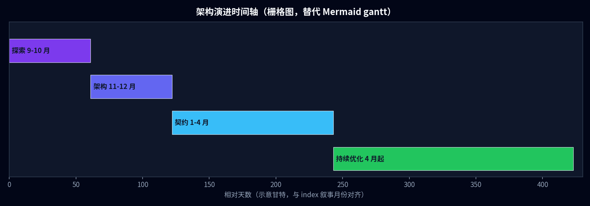
scripts/render_deck_raster_diagrams.py），与四段月份叙事一致。零框架 HTTP + 工具 JSON —— 快，但不可规模化。
一条脚本顶全家：没会话、没文件资产、也没并发隔离。
线上出问题基本靠猜，日志和指标都薄。
模型能按 JSON 点名工具，HTTP 真执行，再把结果塞回对话里——闭环跑得通。
结论：路子对，但不能停在脚本层。
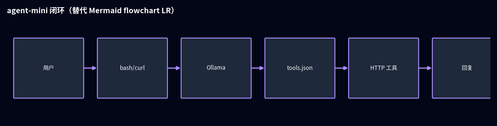
上图是公开原型 agent-mini 一类结构：没有重型框架，靠 tools.json 把「可调函数」交给模型，适合验证，不适合直接当生产底座。
靠关键词触发流水线，「查个基因」也能误开整套 scRNA。
用户多等一轮，GPU 白烧一轮。
人和机器都吃亏
聊天推理和重计算走同一套服务链。
高峰时 API 先扛不住，排障还难拆。
扩容也治标不治本
结论：光靠关键词不够，要把「该不该跑重活」先判清楚——也就是后面的结构化路由。
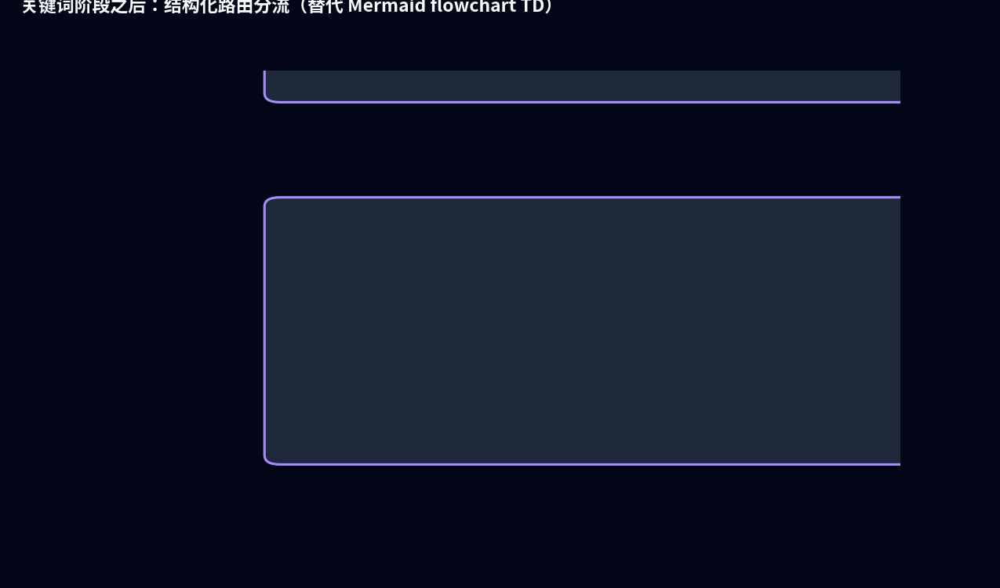
AgentOrchestrator · SemanticRouter · SkillAgent
SSE state_snapshot · 可回放决策链
OmicsAssetManager · 路径铁律 · 诊断白名单
执行器反射注入 · 签名即 Schema
WorkflowRegistry SOP 域名 ⇄ 前端工作流卡片 ·
RouterOutput Pydantic 强校验 · OpenAI
tools[].parameters 同源
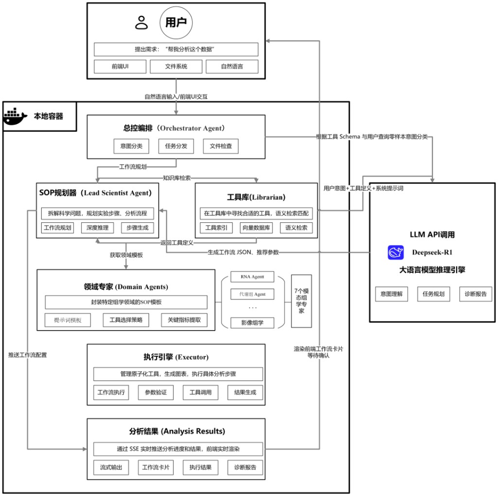
设计资产 · 分层模块（SVG）
docs/exports/design-module-layered.svg与「模块交互总览」同一套紫青视觉语言：先判意图、拆科学问题、再对齐工具库与 SOP，最后由 LLM 产出可执行工作流草案。
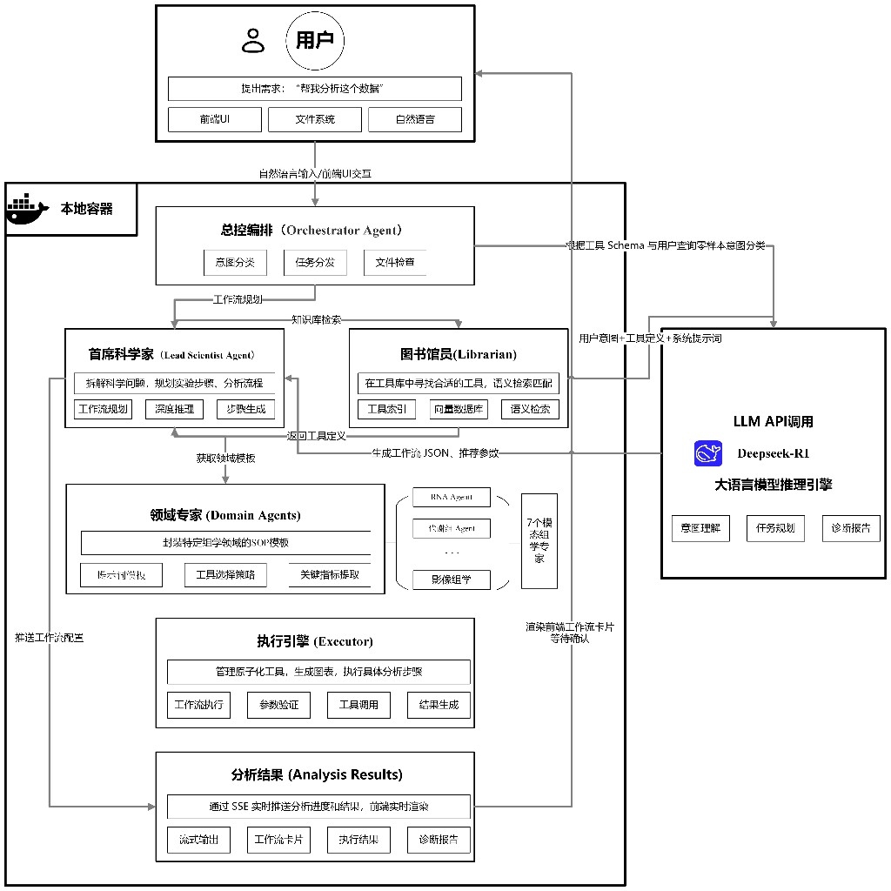
工作流卡片确认后进入执行链：Executor 调原子工具与沙箱，错误经红路回灌 LLM 做修正；结果经 SSE 推送到前端实时渲染。
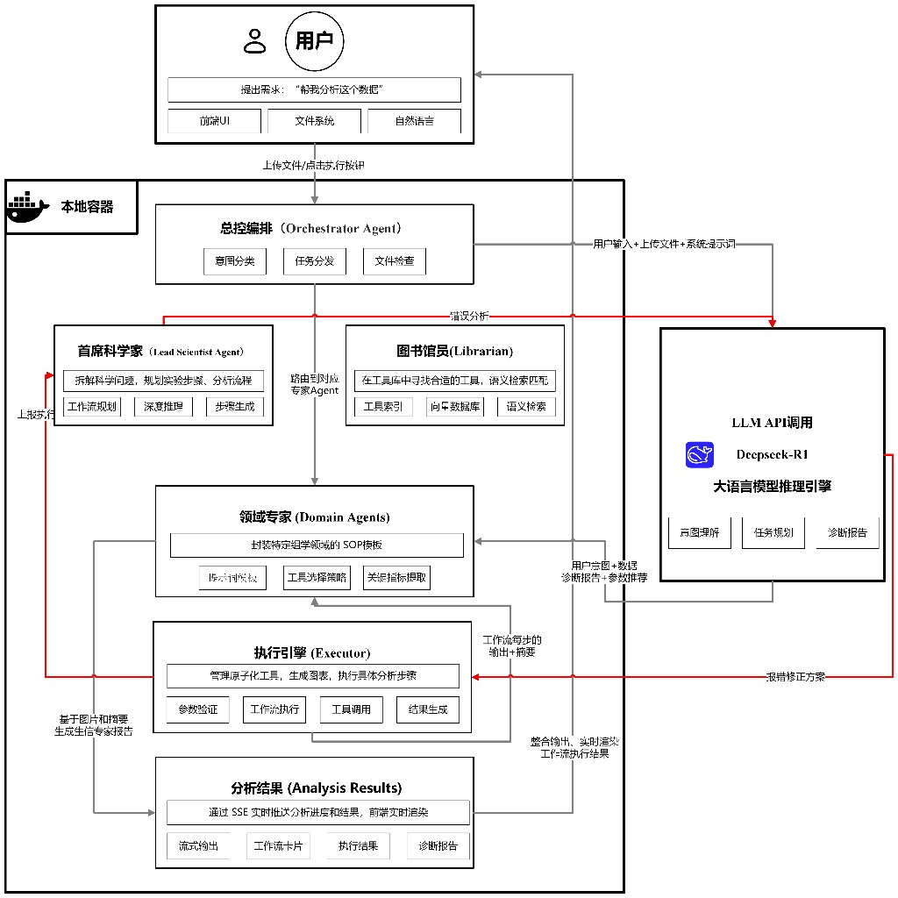
Chapter 02 · 能力版图
下面三张图由仓库内 data/deck_metrics.json 驱动脚本生成（python3 scripts/build_deck_charts.py），字够大、轴标签写清「这张图在回答什么问题」。
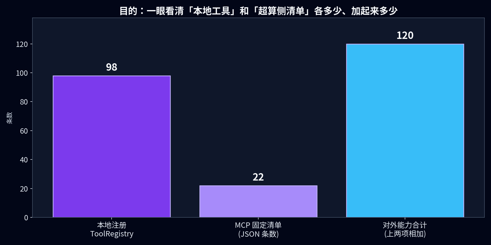
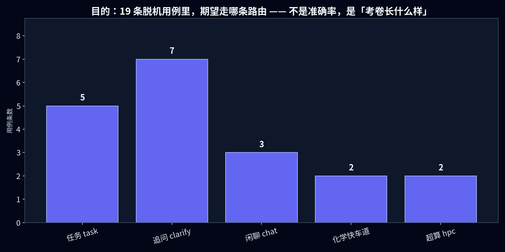
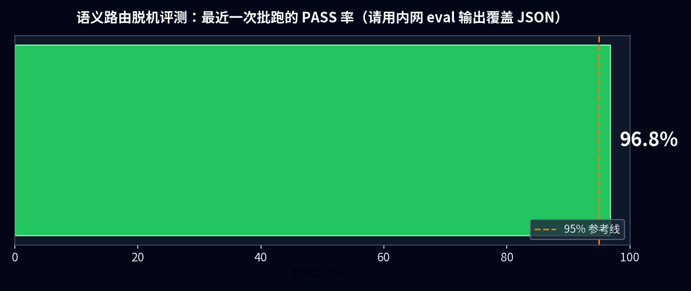
eval_semantic_pass_rate_pct 后重跑脚本即可同步到图。
数据文件：述职PPT/data/deck_metrics.json · 出图：述职PPT/scripts/build_deck_charts.py · MCP 条数源：docs/hpc_mcp_tools_catalog.json · 本地工具源：与
工具库.md 导出一致。
核心壁垒 ①
gibh_agent/core/semantic_router.py —— 先判「该不该动手」，再谈「动哪只手」。
没上传就别启动重管线；没开算力通道就别走超算；明显百科问答就别硬套 Pipeline。
把当前环境里真实存在的 SOP 名、工具 id 摘要给模型，减少「编一个不存在的工具名」。
解析 JSON → Pydantic 校验 → 置信度低就重试 → 仍不行就追问用户，避免悄悄走错分支。
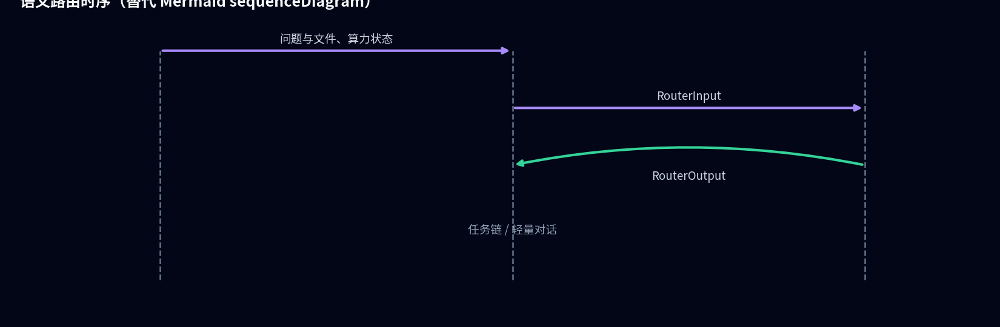
核心壁垒 ②
@registry.register）docs/hpc_mcp_tools_catalog.json）
Python 函数签名直接生成 JSON Schema，和 OpenAI 的 tools[] 一套格式：模型看到的定义，和真正执行时用的是同一份，减少「文档一套、代码一套」的错位。
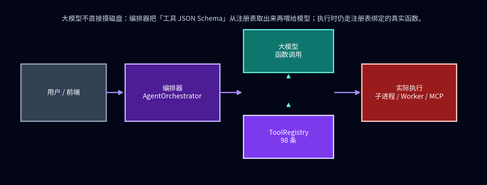
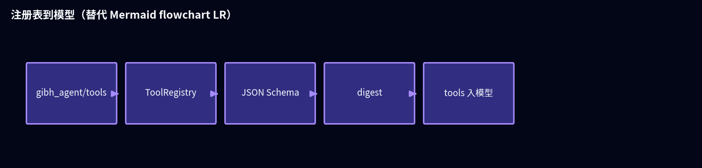
核心壁垒 ③
hpc_mcp_* 按 MCP 协议做动态注册，与 compute_scheduler 开关联动：网关没开时，模型侧不会出现「看得见却调不了」的超算工具。
重连前 unregister_many 清一遍，避免僵尸工具条目。
化学单点 → 编排器二次消歧 → [Skill_Route: …] → SkillAgent。
主进程不跑重 RDKit；子进程 / worker-pyskills 防爆装甲。
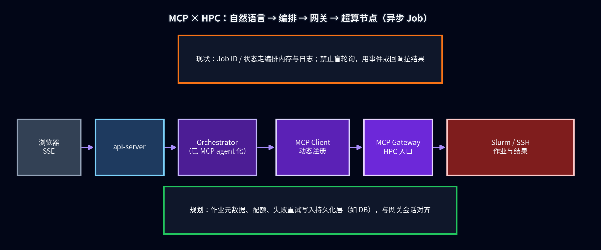
Chapter 03 · 工程拓扑
下图可改节点名；高清印刷版请用占位区替换为矢量导出。
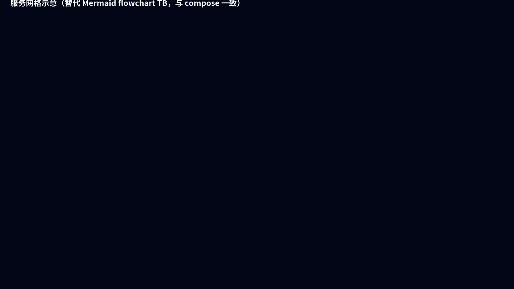
工程纵深
api / mysql / redis / worker 分容器；GPU 可选独占。
BepiPred · CHEM_RDKIT_PYTHON —— 与主进程 Python 解耦。
SSE state_snapshot ↔ 入库 content 四联一致。
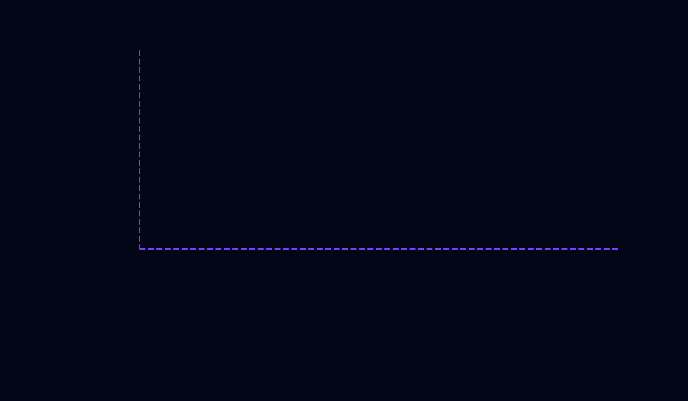
mermaid/docker_compose_topology.mmd 描述、scripts/render_deck_raster_diagrams.py 渲染为 PNG；与
docker-compose.yml 服务一致（api-server / worker / mcp-gateway / worker-pyskills / MySQL / Redis / Nginx / 挂载卷）。
Chapter 04 · 价值与规划
说人话版：系统稳定跑起来以后，把真实对话里踩过的坑留下来，反过来改路由和工具说明，下次少浪费算力、少返工。
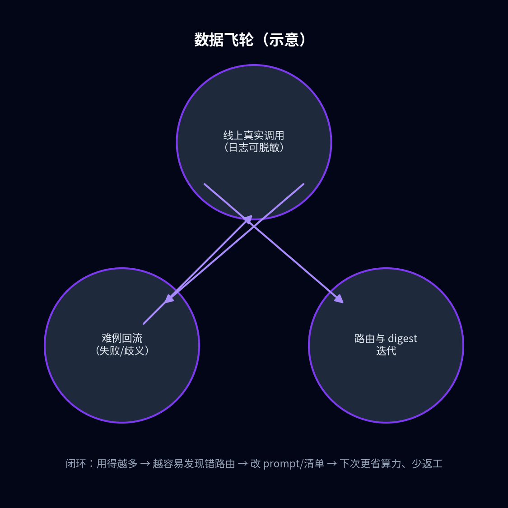
Closing
高可用 · 数据飞轮 · 实时迭代 —— 智能体不是一次性 Demo，是持续交付系统。
Q & A